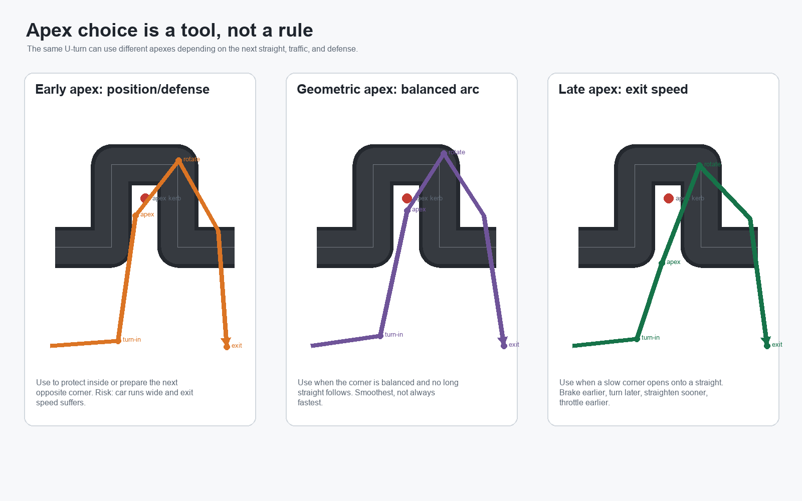
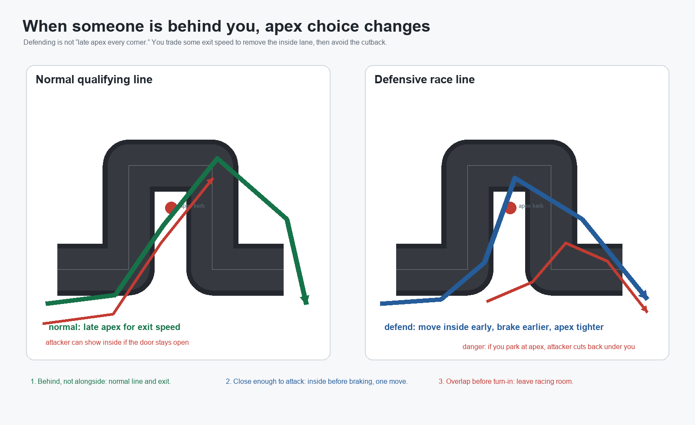
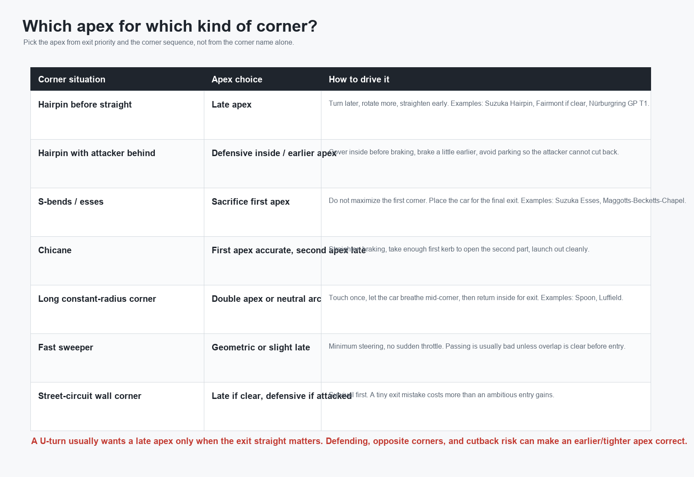
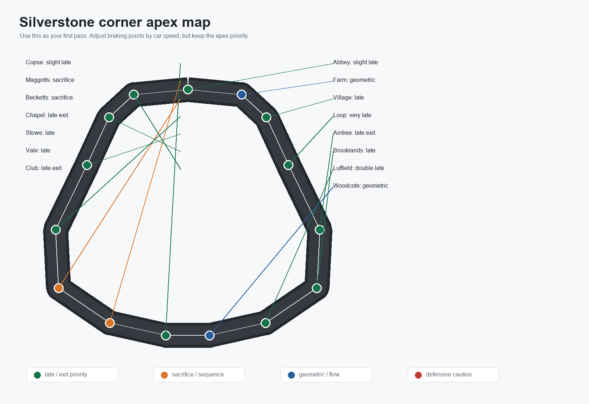
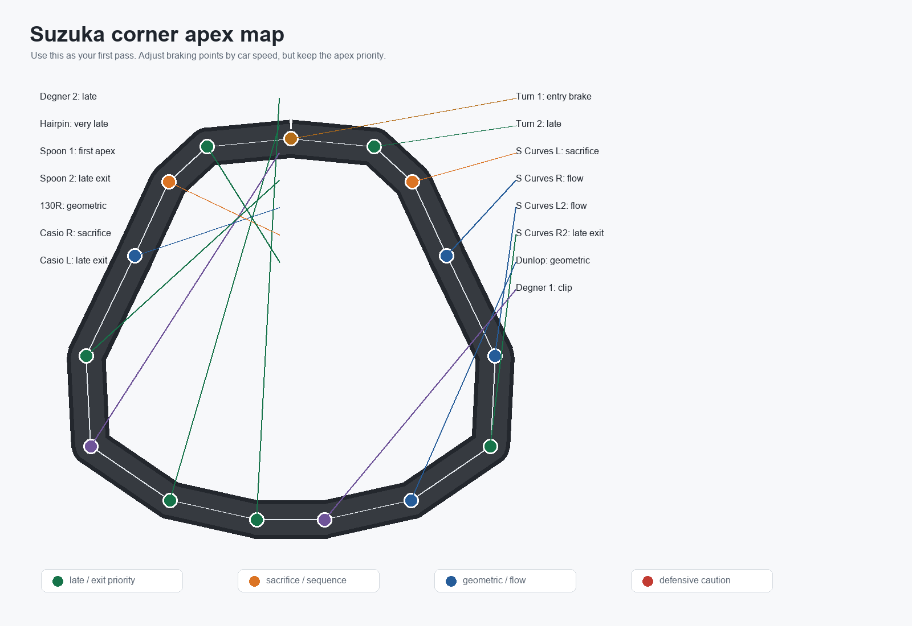
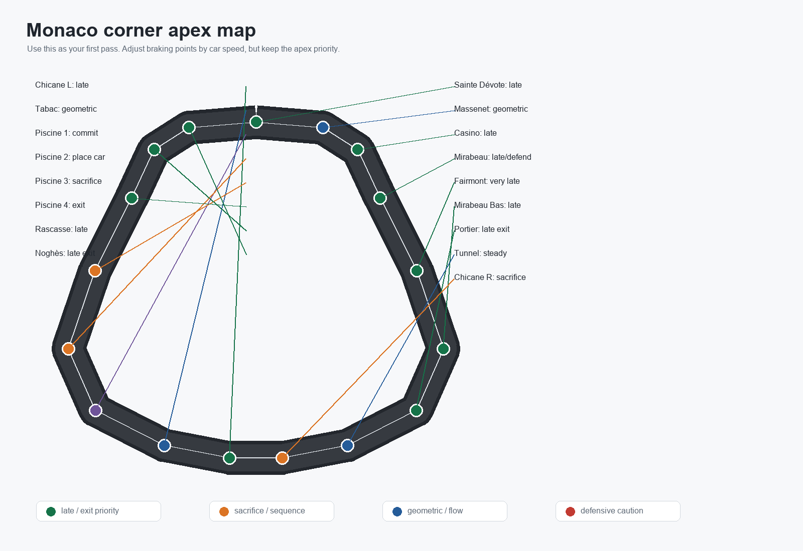

About this course
Race Car Simulator 101 is for drivers who want to stop guessing and start building laps deliberately. The simulator is fast enough that small mistakes matter: braking too late overloads the front tires, early throttle pushes the car wide, and a careless overtake can ruin two races at once.
The goal is not to memorize one perfect lap. The goal is to understand what the car needs at each phase of a corner so you can adapt to different cars, tracks, traffic, and online race pressure.
Learning objectives
- Build a lap from reference points: braking marker, turn-in, apex, exit, and recovery point.
- Choose early, geometric, or late apexes based on the corner that follows.
- Use trail braking and throttle release to rotate the car without sliding it.
- Identify safe overtaking zones, set up a pass before the braking zone, and leave racing room.
- Defend without weaving, blocking late, or destroying your own exit speed.
- Plan pit timing for online races that use agreed mandatory stops or endurance rules.
- Drive the simulator's tracks with specific race-line notes instead of treating every corner the same.
Before you begin
You only need one car, one track, and enough patience to repeat the same corner several times. Start in private practice, choose a medium-speed circuit such as Silverstone or Suzuka, and drive at 70 percent until you can complete clean laps without correction.
Driver mindset: speed is the result, not the input. Your inputs are brake pressure, steering angle, throttle timing, and where you place the car.
Pictures and videos
Use these first. Apex choice is easier to understand when you see the path, the mistake, and the exit shape. The images and videos below are raster PNG/MP4 teaching assets generated for this simulator guide.


Curriculum
Build the lap map
Mark braking, turn-in, apex, exit, and the next straight. A corner is never isolated; it is a setup for the next piece of track.
Brake like a driver
Brake hard while straight, then release pressure as steering increases. The release is what lets the nose bite.
Pick the right apex
Use late apexes for slow exits and long straights, geometric apexes for balanced sweepers, and early apexes only when the next corner demands track position.
Control throttle and rotation
Throttle should return as the steering unwinds. If you add power before the car is pointed, you create understeer or a slide.
Race starts and first laps
Launch cleanly, hold your lane, brake early in traffic, and survive lap one before attacking.
Overtake with a plan
Pressure, force a compromised exit, draw alongside before braking, and finish the pass without relying on contact.
Defend cleanly
Choose the inside early, make one move, brake in control, and leave room when the other car has overlap.
Use pit strategy
For online rooms with mandatory stops, decide whether to undercut, overcut, or stay out based on traffic and pace.
Learn track personality
Silverstone rewards flow, Suzuka rewards rhythm, Monaco rewards restraint, Nardo rewards tiny inputs, and the Nurburgring rewards memory.
Practice with purpose
Run focused stints: five laps for braking, five laps for exits, five laps in traffic, then compare consistency rather than one lucky lap.
Driving foundation
The corner has five reference points
- Braking marker: the point where you start slowing. Move it later only after you can hit the apex three times in a row.
- Turn-in point: the point where you first ask the car to rotate. Early turn-in creates early apex; late turn-in creates late apex.
- Apex: the closest point to the inside kerb or wall. It is not always the middle of the corner.
- Exit point: where the car reaches the outside of the track. Good exits feel boring because the steering is already unwinding.
- Recovery point: where the car is straight enough for full throttle and the next braking marker becomes visible.
How to run each apex
| Apex type | Use it when | How to drive it | Common mistake |
|---|---|---|---|
| Late apex | Slow corner before a straight, or any corner where exit speed matters more than entry speed. | Brake a little earlier in a straight line. Stay wider longer. Turn later and sharper. Clip the inside after the middle of the corner, then open the wheel and go to throttle. | Turning in early but calling it late apex. If you reach the inside too soon, you are early-apexing. |
| Geometric apex | Medium or fast single corner where entry and exit have similar value. | Use one smooth arc. Apex near the natural middle of the corner. Keep steering angle stable and avoid a big brake/throttle change mid-corner. | Over-slowing for a corner that only needed a lift or small brake. |
| Early apex | Defending the inside, preparing for an immediate opposite corner, or entering a narrow section where track position matters. | Turn in sooner and accept that exit speed will be worse. Keep the car tight enough to block the inside or place it for the next corner. | Using early apex in a corner before a straight. You will run wide and lose speed all the way down the straight. |
| Double apex | Long corners that keep turning, such as Suzuka Spoon, Silverstone Luffield, Karussell-style bends, or long banked arcs. | Touch inside once, release the car slightly mid-corner, then return to a second later apex for the exit. Do not pinch the car all the way around. | Holding the inside too long. That scrubs speed and makes throttle late. |
| Sacrifice apex | Esses and chicanes where the last exit matters most. | Do not try to win the first apex. Use the first corner to place the car for the second or third corner, then late-apex the final exit. | Being fastest in the first part and slowest out of the sequence. |

Does a U-turn always use late apex?
No. A U-turn usually wants a late apex only when the exit opens onto a straight or acceleration zone. If the U-turn is followed immediately by the opposite direction, you may need an earlier or sacrifice apex to place the car. If someone is attacking your inside, you may need a defensive earlier/tighter apex. If the turn is very long, you may need a double apex instead of one late point.
Better rule: late apex is for exit speed. Early apex is for position. Geometric apex is for flow. Double apex is for long corners. Sacrifice apex is for sequences.
Racecraft
Race starts
At the lights, your first job is traction, not hero speed. Launch straight, keep the steering tiny until the car is settled, and expect everyone ahead to brake earlier than they did in practice. In online races, leave more space than you think on lap one because small lag and cold-driver mistakes create accordion braking.
If someone is chasing you
| Situation | Your line | How to drive | Risk |
|---|---|---|---|
| They are behind but not close enough to attack | Normal racing line | Keep the late/geometric apex you would use alone. Your best defense is a strong exit. | Defending too early slows you down and invites a pass. |
| They are close before a heavy braking zone | Defensive inside line | Move inside before braking, one move only. Brake 5-10 meters earlier because the inside line has a tighter radius. Apex earlier/tighter, then get back to throttle without parking. | If you stop at the apex, they cut back under you. |
| They are alongside before turn-in | Leave racing room | Hold your lane. Inside car must make the apex; outside car must be given track on exit if overlap remains. | Turning like the other car is not there causes contact. |
| They attack from too far back | Brake normally, leave emergency space | Do not turn down late if they are already locked inside. Let them overshoot, then cross back to the exit. | Panic turning creates avoidable contact. |
Overtaking is built one corner earlier
A correct pass starts before the braking zone. You pressure the driver ahead, make them defend, get a better exit, then arrive alongside before turn-in. If you only appear at the apex, it is usually a divebomb, not racecraft.
- Exit setup: stay close through the previous corner without hitting. Sacrifice entry if it gives you a straighter throttle exit.
- Choose the side early: show inside before the braking zone so the defender can react. Do not weave side to side.
- Brake on your line: inside line means tighter radius, so brake earlier than the normal marker. Outside line means you need more overlap before turn-in.
- Hit your apex: the inside car must still make the corner. If you miss the apex by a car width, the move was too late.
- Leave exit space: if another car remains alongside, you cannot use the whole road like a qualifying lap.
- Use the cutback: if the defender takes a tight early apex, do not force inside. Turn later, cross under, and beat them on exit.
Good and bad passing zones
| Move type | Where it works | How to do it | Do not do it |
|---|---|---|---|
| Inside braking pass | Silverstone Vale, Suzuka Hairpin, Monaco Nouvelle Chicane, Nurburgring GP T1, Bugatti Rettifilo. | Be at least partly alongside before braking. Brake straight, make the apex, leave exit room. | Late lunge from two car lengths back. |
| Cutback | Any slow corner where defender protects inside: Loop, Fairmont, Hairpin, T1, Rascasse. | Brake a touch earlier, turn later than the defender, let them run tight, then straighten sooner and accelerate underneath. | Following their tight line and losing the same exit speed. |
| Outside pass | Wide corners with grip and clear overlap, such as some Silverstone or Nardo situations. | Only commit if you are already alongside and can stay there without running out of track. | Trying outside at Monaco walls or fast esses. |
| Slipstream pass | Long straights: Hangar Straight, Suzuka back straight, Dottinger Hohe, Nardo. | Pull out before braking, clear the car, then return to the braking line safely. | Moving across the other car's nose at top speed. |
Defending
Defend before the braking zone, not inside it. Move once, cover the inside, and then drive the corner. The defensive apex is usually earlier and tighter than the ideal late apex, so you must brake earlier. The hard part is not covering the inside; the hard part is still getting enough exit speed that the attacker cannot cut back.
Traffic and lapping
When approaching slower traffic, pass where the track is straight and the other driver can hold a predictable line. If you are being lapped, do not suddenly brake or jump off-line. Stay predictable, lift slightly on a straight, and let the faster car choose the side.
Track guide
These notes match the simulator's named route corners. The apex choice is the first plan; your exact braking marker still changes by car, fuel-style settings, speed, traffic, and whether you are using assist/test driver features.



Silverstone Circuit fast flow, wide racing surface
| Turn | Apex plan | How to run it | If someone is behind |
|---|---|---|---|
| Abbey | slight late | Small brake or lift, turn once, clip a little after the middle, let the car breathe to the outside. | Do not defend unless they are already alongside; a defensive line ruins Farm. |
| Farm | geometric | Smooth arc. Keep the car stable and prepare for the Village braking zone. | Hold predictable line; the real attack is into Village. |
| Village | late | Brake straight, stay wide, turn late, aim to rotate before The Loop. | Cover inside early if attacked, but brake earlier or you will overshoot. |
| The Loop | very late | Slowest corner in this section. Wait, rotate, and prioritize Aintree exit. | Inside defense is valid; watch for cutback on exit. |
| Aintree | late exit | Use all exit road onto the straight. Throttle only when the car is pointed. | Exit matters more than blocking; a bad exit loses the straight. |
| Brooklands | late | Brake while straight, turn late, avoid drifting into Luffield too early. | Common passing spot. If defending, take inside but expect a cutback. |
| Luffield | double late | First touch inside, release slightly mid-corner, then second late apex for Woodcote. | Do not hug inside forever; that invites a faster exit from the attacker. |
| Woodcote | geometric | Gentle steering, full throttle only when the car is settled. | Hold line; side-by-side here is risky unless overlap is already clear. |
| Copse | slight late | High-speed commitment. Turn once, clip after center, avoid lifting mid-corner. | Do not defend late. If they are not alongside before turn-in, take your line. |
| Maggotts | sacrifice | Do not use all road too early. Place the car for Becketts and Chapel. | No overtake. Give space only if overlap is already real. |
| Becketts | sacrifice | Accept less speed so the car is on the correct side for Chapel. | Stay predictable; defending destroys the sequence. |
| Chapel | late exit | Final apex is the money corner. Straighten early for Hangar Straight. | Best defense is exit speed; do not pinch the car. |
| Stowe | late | Heavy brake, late apex, strong exit toward Vale. | Inside pass zone. If defending, move early and brake earlier. |
| Vale | late | Brake straight. Make the first apex without overshooting, then prepare Club. | Leave room if overlap exists; many passes happen here. |
| Club | late exit | Prioritize the final right-hand exit onto the start/finish straight. | Cutback works if defender parks at Vale; protect exit more than apex. |
Suzuka Circuit rhythm and patience
| Turn | Apex plan | How to run it | If someone is behind |
|---|---|---|---|
| Turn 1 | entry brake | Brake straight and treat this as the setup for Turn 2. Do not chase the first inside too hard. | Defend only if they are alongside; otherwise prioritize Turn 2 exit. |
| Turn 2 | late | Rotate late and open the wheel toward the Esses. | Inside defense compromises the whole first sector; use it only when necessary. |
| S Curves L | sacrifice | First left is not the hero corner. Keep enough road to change direction. | No overtake. Back out if side-by-side. |
| S Curves R | flow | Smooth weight transfer; avoid throttle stabs. | Hold rhythm and leave space only for established overlap. |
| S Curves L2 | flow | Use a clean arc and keep the car ready for R2. | Do not block; a mistake here ruins Dunlop. |
| S Curves R2 | late exit | Last part matters most. Straighten for Dunlop. | Exit speed defends better than a tight apex. |
| Dunlop | geometric | Long uphill bend. Hold a smooth radius and keep speed alive. | Side-by-side is dangerous; stay predictable. |
| Degner 1 | clip | Fast clip; do not over-slow. The car must be settled for Degner 2. | No late move. If attacked, leave room and win Degner 2 exit. |
| Degner 2 | late | Brake, rotate late, and get the exit clean. | Inside defense is possible but invites cutback. |
| Hairpin | very late | Classic U-turn before acceleration. Brake straight, turn late, clip late, throttle early. | If attacked, defend inside with earlier apex, then watch for cutback. |
| Spoon 1 | first apex | Touch inside once but do not stay pinned to the inside. | Do not fight side-by-side through both apexes unless overlap is huge. |
| Spoon 2 | late exit | Second apex opens the back straight. This exit is more important than Spoon 1 entry. | Defend exit, not entry. Bad exit loses the straight. |
| 130R | geometric | High-speed arc. Minimal steering and no panic lift. | Not a dive zone. Only stay side-by-side if overlap exists before entry. |
| Casio R | sacrifice | Brake straight, take enough first apex to open the left. | Inside pass zone, but the attacker must slow enough for the second part. |
| Casio L | late exit | Final left decides the main straight. Turn late and launch out. | Cutback is strong if defender over-protects Casio R. |
Circuit de Monaco restraint, exits, and walls
| Turn | Apex plan | How to run it | If someone is behind |
|---|---|---|---|
| Sainte Dévote | late | Brake straight, turn late, use uphill exit. Do not attack the inside too early. | Inside defense is valid; brake earlier and avoid blocking the exit wall. |
| Massenet | geometric | Long left. Smooth steering and stable throttle. | No late defense; hold line. |
| Casino | late | Clip late enough to open the downhill run. | Single-file. Avoid sudden braking. |
| Mirabeau | late / defend | When clear, late apex. When attacked, cover inside early and accept slower exit. | Prime defense corner. Do not move under braking. |
| Fairmont Hairpin | very late | Very slow U-turn. Wait, rotate, and unwind before throttle. | Track position matters. Tight inside defense is okay, but cutback risk is high. |
| Mirabeau Bas | late | Short braking, late apex, do not hit the wall on exit. | Do not force a pass; prepare Portier. |
| Portier | late exit | This corner controls tunnel speed. Slow in, late apex, early throttle. | Best defense is exit. A tight defensive entry loses the tunnel. |
| Tunnel | steady | Hold a stable radius and avoid steering corrections. | Slipstream may start here; choose side before the chicane braking zone. |
| Nouvelle Chicane R | sacrifice | Brake straight. Do not overshoot the first right; it sets up the left. | Main pass zone. If inside, make the apex. If outside, leave room only for overlap. |
| Nouvelle Chicane L | late | Second apex matters for exit. Avoid cutting back too early across another car. | Cutback works if defender misses the first part. |
| Tabac | geometric | Commit with one smooth input. Do not add steering late. | Not an overtake corner. |
| Piscine 1 | commit | Clip accurately, keep the car straight enough for the direction change. | No side-by-side unless already overlapping. |
| Piscine 2 | place car | Use this to set up the next pair, not to gain one meter. | Back out rather than hit the wall. |
| Piscine 3 | sacrifice | Prepare the final exit. Less entry speed can be faster. | Defending here is usually a mistake. |
| Piscine 4 | exit | Open steering early and breathe the car out. | Exit cleanly; contact here blocks the track. |
| La Rascasse | late | Slow, late, patient. Rotate before throttle. | Common defense corner. Protect inside but do not park. |
| Anthony Noghès | late exit | Final exit matters for the main straight. Late apex and use all road. | Cutback is better than a desperate inside lunge. |
Nurburgring GP braking zones and exits
| Turn | Apex plan | How to run it | If someone is behind |
|---|---|---|---|
| T1 Castrol-S | late | Heavy braking. Late apex and square the car for the short exit. | Major passing zone. Defend inside early, brake earlier, avoid cutback. |
| Mercedes Arena | sacrifice | Do not maximize entry. Place the car for the final Arena exit. | Side-by-side is slow; prioritize clean sequence. |
| Arena R | late exit | Rotate late, open steering, and leave the slow section cleanly. | Exit speed prevents the next attack. |
| Yokohama-S | late | Brake in a straight line, turn late, do not wash out. | Inside defense works if overlap is close. |
| Valvoline | geometric / slight late | Medium-speed bend. Smooth arc and stable throttle. | Not a strong passing corner. |
| Ford chicane | sacrifice | First part opens the second. Do not attack the first apex too greedily. | Defender must leave room if overlap exists before braking. |
| Dunlop-Kehre | late | Slow bend. Late apex for exit up the hill. | Watch for cutback if you defend tight. |
| Coca-Cola | late exit | Final corner type. Get the car straight for start/finish. | Bad defensive apex loses the straight. |
| NGK | sacrifice | Brake straight and prioritize the second part. | Inside pass only if clear before braking. |
Nordschleife memory, survival, and respect
| Turn / section | Apex plan | How to run it | If someone is behind |
|---|---|---|---|
| Hatzenbach L/R/esses | sacrifice sequence | Think of the section as one rhythm. Do not win one apex and lose the next three. | No forced overtake; wait for a straight. |
| Flugplatz | geometric | Settle the car before the crest. Small inputs only. | Do not defend across a crest. |
| Schwedenkreuz | geometric / lift | Fast left. A small lift before turn-in is better than a panic lift mid-corner. | No side-by-side unless fully alongside before entry. |
| Aremberg | late | Heavy brake, late apex, clean downhill exit. | Possible pass zone; defend inside early. |
| Fuchsröhre | flow | Hold smooth line through compression. Avoid sudden steering. | Do not fight for position here. |
| Adenauer Forst | late / survival | Brake earlier than pride wants. Make the apex, then exit clean. | Let divebombs overshoot; cut back under them. |
| Metzgesfeld | geometric | Medium corner. Stable car beats extra entry speed. | Hold line; pass later. |
| Kallenhard | late | Slow enough to rotate, then exit strongly. | Defend only if attack is already visible. |
| Wehrseifen | very late | Tight and slow. Wait, rotate, and do not rush throttle. | Inside defense creates cutback risk. |
| Ex-Mühle | late exit | Exit up the hill matters. Sacrifice entry. | Exit speed is your defense. |
| Bergwerk | late exit | Important exit onto a long fast section. Brake enough, late apex, full throttle only when straight. | Do not defend so hard you lose the long run after it. |
| Karussell | double / patient | Slow entry, settle, hold patient line, then exit without fighting the wheel. | Single file. Passing here is usually a mistake. |
| Hohe Acht | geometric | Keep the car balanced over the rise. | No late defense. |
| Wippermann | sacrifice | Use the first part to prepare the second. Rhythm beats aggression. | Let faster car pass on a safer straight. |
| Eschbach | late | Rotate late and use exit road. | Inside defense possible but risky. |
| Brünnchen | late | Brake straight, late apex, avoid running wide. | Common mistake zone; give space if overlap exists. |
| Pflanzgarten | commit / settle | Let the car land and settle before asking for more steering. | No side-by-side hero move. |
| Schwalbenschwanz | late | Slow enough to make the late point cleanly. | Do not pinch the exit wall. |
| Kleines Karussell | patient | Short carousel style. Do not fight the car mid-corner. | Single file. |
| Galgenkopf | late exit | One of the most important exits. It leads to the long straight. | Never over-defend here; exit speed decides the straight. |
Bugatti Grand Épreuve Monza-style speed and chicanes
| Turn | Apex plan | How to run it | If someone is behind |
|---|---|---|---|
| Rettifilo R | sacrifice | Brake straight and do not overshoot the first right. | Main passing zone; inside car must make the second part. |
| Rettifilo L | late exit | Second part matters for the launch down the straight. | Cutback is strong if defender misses the right. |
| Curva Grande | geometric | Fast sweeping line. Tiny steering corrections only. | Slipstream pass should happen before braking, not mid-corner. |
| Roggia L | sacrifice | First part opens the right. Brake straight and keep the car under you. | Inside dive must still leave room through the right. |
| Roggia R | late exit | Exit speed matters. Do not cross back across another car too early. | Watch for cutback. |
| Lesmo 1 | late | Brake enough, late apex, do not run wide. | Not a great passing zone unless clear overlap. |
| Lesmo 2 | late exit | More important than Lesmo 1 because of the following straight. | Exit speed beats defense. |
| Ascari L | sacrifice | Set the car for the middle right, not for ego. | No late lunge. |
| Ascari R | flow | Balanced middle; keep the car loaded smoothly. | Hold line. |
| Ascari L2 | late exit | Final exit opens the straight. Prioritize throttle timing. | Do not defend so much that you lose the straight. |
| Parabolica | double late | Long corner. Enter controlled, release mid-corner, second late apex for the straight. | Outside pass possible only with real overlap and room. |
Nardo Ring speed discipline
| Section | Apex plan | How to run it | If someone is behind |
|---|---|---|---|
| Banked circle | steady radius | There is no normal apex like a road-course hairpin. Hold a lane, use tiny steering, and make speed changes slowly. | Pass only with a clear speed difference. Do not drift across another car at top speed. |
Pit strategy
The simulator includes a pit limiter, but it does not currently model a complete tire, fuel, and repair pit-stop system. For online races, treat pit stops as agreed race rules: for example, every driver must slow with the pit limiter through a chosen pit window, or complete one reset/pit-lane visit between two lap numbers.
When to pit
- Undercut: pit earlier when you are stuck in traffic and have clear space behind. The goal is clean laps while the other driver loses time defending.
- Overcut: stay out when your pace is strong and the car ahead may rejoin into traffic. This works best when you can lap consistently without mistakes.
- Safety stop: pit after damage, repeated spins, or a mental reset moment. In long online races, a calm reset can save more time than one desperate lap.
- Monaco rule: track position is king. Do not pit into traffic unless the race rule forces it.
- Nordschleife rule: avoid pitting from panic. Finish the sector safely first, then decide on the straight.
How to set pit rules for friends
Before the host starts the race, agree on the pit window, lap count, and penalty. Keep it simple: one mandatory pit-limiter pass between laps 2 and 5, no pitting on the final lap, and a 10-second hold if someone forgets.
Practice plan
- Five clean laps: no overtakes, no experiments, just finish each lap without leaving the track.
- Brake marker drill: pick one braking point and move it five meters later only after three clean attempts.
- Apex drill: run the same corner with early, middle, and late apexes. Watch which one gives the best exit speed.
- Traffic drill: follow a rival for a lap without passing. Learn where you are faster before attacking.
- Race stint: run ten laps and judge consistency. A driver who is 0.5 seconds slower but never crashes often wins online.
Support the simulator
If you want to support more tracks, better visuals, and deeper racing features, you can send Bitcoin directly to this address.

1G3owA2kPUuYS45XGyj8p8M3kgdHQzePBs
Please double-check the address before sending. Bitcoin transactions cannot be reversed.